Data publicării: 19.07.2019
Autor articol: Adrian Iftene
Introducere
Se spune că o imagine transmite mult mai mult decât o mie de cuvinte. Prin intermediul imaginilor avem posibilitatea să transmitem idei, sentimente sau experiențe trăite, într-un mod foarte simplu, dar în același timp foarte expresiv. A trecut mult timp de când a fost realizată prima imagine fotografică în 1826, iar de atunci am asistat la o evoluție continuă a tehnologiei. În Figura 1 avem “Vederea de la Fereastra de la Le Gras”, o imagine heliografică și cea mai veche fotografie care a supraviețuit trecerii vremurilor. Imaginea a fost creată de Nicéphore Niépce în 1826 sau în 1827 la Saint-Loup-de-Varennes, în Franța, și arată părți ale clădirilor și ale moșiei sale, Le Gras, după cum pot fi văzute de la fereastră sa (Blazeski, 2018).
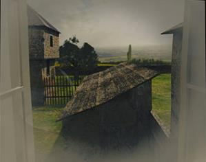
Figura 1: Prima fotografie “View from the Window at Le Gras” (în stânga) și o poză color actuală (în dreapta)
Astăzi se pot face fotografii și se poate filma oriunde, oricând, prin intermediul unor instrumente din ce în ce mai diverse și mai avansate: de la telefoane mobile, smart-phone-uri, tablete, camere video, camere web, până la cele mai sofisticate aparate de fotografiat și de filmat sau drone zburătoare. Câteva statistici interesante despre ce se întâmplă pe Facebook: se încarcă peste 300 de milioane de imagini zilnic, iar la fiecare 60 de secunde se adaugă peste 510.000 de comentarii, se modifică 293.000 de statusuri ale utilizatorilor și se încarcă peste 136.000 de fotografii.
Cantități din ce în ce mai mari de conținut vizual sunt create zi de zi, oră de oră. Aceste resurse devin într-un timp foarte scurt disponibile tuturor persoanelor de pe glob cu ajutorul Internetului. Dacă privim înapoi la evoluția Web-ului, putem vedea cum s-a trecut de la versiunea Web 1.0 de actualitate până prin anul 2000, “o versiune ce permitea în primul rând citirea informațiilor”, la versiunea Web 2.0 până prin 2005, “o versiune de citire și de scriere masivă”, la versiunea Web 3.0 de prin 2010 “orientată pe portarea în Internet a informațiilor personale”, până la versiunea Web 4.0 care se prevede că va apare în perioada următoare (vezi Figura 1 pentru detalii). În acest context, căutarea inteligentă de imagini este un subiect de actualitate și de larg interes. În trecut, se creau pagini Web statice, în cea mai mare parte bazate pe text, iar motoarele de căutare se concentrau foarte puțin pe găsirea imaginilor relevante în legătură cu o interogare a unui utilizator. În prezent, lucrurile s-au schimbat foarte mult. Găsirea imaginilor a devenit la fel de importantă ca și găsirea resurselor textuale – sau poate chiar mai importantă, dacă ținem cont de cele menționate anterior.
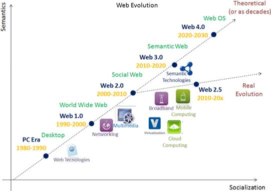
Întrebarea care se pune acum este: Ce face ca preluarea imaginilor să fie o chestiune atât de complicată? Ideea de început, de a împărtăși fotografiile pe care le facem cu alte persoane sună foarte bine în teorie, iar posibilitățile oferite astăzi de Internet sunt nenumărate și includ aplicații specializate în preluare de imagini pe web (precum Flickr sau Picasa) sau prin intermediul rețelelor sociale (precum Facebook sau Twitter) sau pur și simplu prin postarea directă de pe calculatorul propriu, care este conectat la Internet. Este foarte bine că avem atât de multe posibilități, dar ce se întâmplă după ce conținutul acesta ajunge pe Internet? Cât de ușor poate fi găsit și accesat după aceea? Datorită naturii eterogene a tuturor acestor resurse de interes, din care un utilizator poate alege ce-i place cel mai mult, este foarte dificil să cauți în toate resursele care ar putea conține ceva ce l-ar putea interesa. Pe lângă acest fapt pot apărea probleme datorate limbii în care sunt făcute adnotările asociate unei imagini, distanța până la resursă, viteza de transfer sau aspecte de securitate.
O altă problemă provine din faptul că pentru a căuta ceva ne exprimăm doar prin intermediul cuvintelor. Căutarea pe bază de cuvinte merge din ce în ce mai bine atunci când căutările se fac în colecții de date textuale, datorită faptului că prelucrarea limbajului natural a evoluat în ultimul timp, venind cu o gamă largă de algoritmi și tehnici specifice. Lucrurile însă se schimbă când vine vorba de colecții de imagini, în primul rând datorită faptului că trebuie să avem abilități pentru a ajunge la reprezentări vizuale cu ajutorul descrierilor textuale. Numele unei imagini, una din cele mai folosite caracteristici în procesul de căutare, nu este nici pe departe suficient pentru a descrie conținutul său. Pentru a face căutări cât mai precise ar trebui ca pe lângă nume să mai adăugăm și alte metadate, cum ar fi cuvinte cheie relativ la conținut, caracteristici ale modului în care a fost făcută poza, descrierea conținutului etc. Este dificil însă de estimat câte și care ar fi cele mai relevante metadate pentru a putea căuta eficient în colecțiile mari de imagini.
În acest context, se înțelege utilitatea creării unui motor de căutare de imagini care poate pune la un loc mai multe colecții de imagini, oferind o interfață de căutare comună. Scopul este de a crea o aplicație care să poată apela atât la resurse externe de imagini, cât și la resurse stocate local pe serverul nostru, împreună cu metadatele asociate fiecărei imagini. Acest motor ar permite unui utilizator să emită o cerere de căutare și mai apoi ar obține rezultate relevante ca răspuns. Modulul server ar trebui să ofere răspunsurile în funcție de tipul de dispozitiv de la care a venit cererea, oferindu-se răspunsuri specifice unui computer desktop, unui laptop, unei tablete, unui palmtop sau unui telefon mobil.
Motoare de căutare şi site-uri ce găzduiesc imagini
Există mai multe motoarele de căutare pentru imagini, ce folosesc diferite tehnici de indexare pentru întoarcerea unor rezultate elocvente interogărilor făcute de utilizatori, precum şi site-uri ce găzduiesc şi permit partajarea, vizualizarea şi preluarea de imagini, dintre care reamintim:
- Wikimedia Commons (http://commons.wikimedia.org/wiki/Main_page) găzduieşte peste 55 milioane (iulie 2019) de imagini cu licenţă liberă, fiind considerată cel mai mare domeniu de imagini gratuite. Commons este depozitul principal de fişiere multimedia al enciclopediei Wikipedia, iar acestea sunt structurate în funcţie de tip (imagini, audio, video), subiect (natura, societate-cultură, știință, inginerie), locație (pamânt, spaţiu), autori, licenţe şi surse. Wikimedia Commons pune la dispoziţie şi un API REST ce se accesează prin cereri HTTP (GET sau POST) către URL-ul http://en.wikipedia.org/w/api.php de la care se aşteaptă un răspuns, ce include informaţii din baza de date MediaWiki, în formatul specificat în interogare (XML, JSON, etc.). Un exemplu de imagine de pe Wikimedia Commons poate fi văzut în Figura 3 de mai jos.
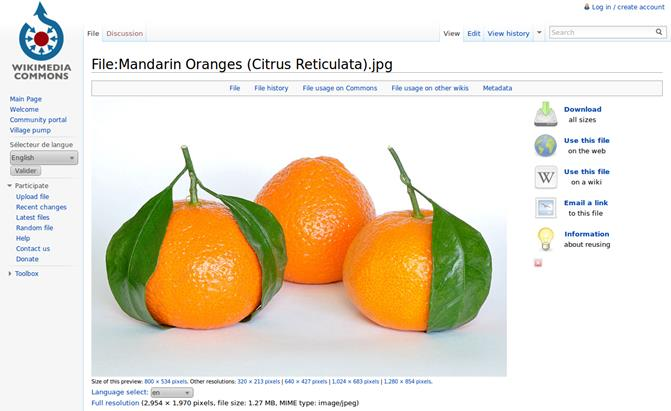
- Google Images (http://images.google.com) este un serviciu pus la dispoziţie de către Google, ce a fost introdus în iulie 2001, şi care oferă utilizatorilor posibilitatea de a căuta imagini în spaţiul web. Căutarea de imagini poate fi realizată atât după cuvinte cheie, cât şi după conţinutul unei imagini. Cuvintele cheie se bazează pe numele fişierului, textul de legătură ce face legătura cu imaginea sau textul ce este asociat unei imagini. Căutarea după imagine utilizează tehnici de procesare automată de imagini pentru a potrivi imaginea încărcată de utilizator cu celelalte imagini din indexul de imagini Google sau din alte colecţii adiţionale. Google pune la dispoziţie şi un API, ce oferă până la 100 de interogări gratuite pe zi şi până la 10.000 de interogări pe zi, în urma unei taxe de $5 pentru fiecare 1.000 de interogări. Pentru a folosi acest API, un dezvoltator trebuie să-şi creeze un cont Google şi să-şi înregistreze o aplicaţie la care poate asocia mai multe motoare de căutare. În urma acestui pas, dezvoltatorul va obţine informaţiile necesare unei interogări: cheia API ce este asociată unei aplicaţii şi identificatorul pentru fiecare motor de căutare pe care doreşte să îl utilizeze. Rezultatul unei căutări pe Google Images poate fi văzut mai jos în Figura 4 (vizual în stânga și sub formă de json în dreapta).
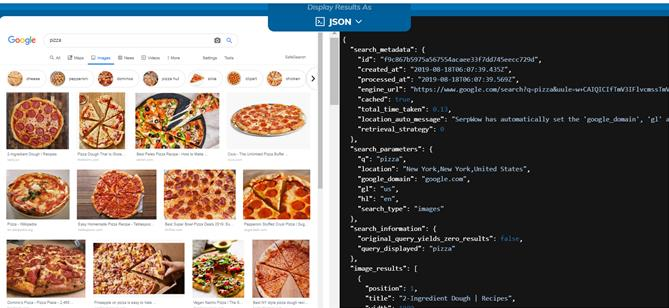
- Bing Images (http://bing.com/images) permite utilizatorilor să caute eficient imaginile cele mai relevante pentru topicul specificat. Imaginile sunt afişate într-o singură pagină şi sunt adăugate treptat în urma navigării în jos. Filtrarea avansată permite rafinarea căutărilor pe baza proprietăţilor asociate imaginilor: dimensiune, raportul de aspect, nuanţa de culori, tipul de imagine etc. Pentru a accesa API-ul oferit de Bing, un dezvoltator trebuie să-şi creeze un cont pe Windows Azure MarketPlace (numit şi cont Microsoft), pe baza căruia va primi o cheie de client (Customer ID) şi o cheie primară pentru cont (Primary Account Key). Toate interogările sunt sigure, din punct de vedere al securităţii, iar autentificarea se realizează printr-un mecanism de tip Oauth 2. Există mai multe abonamente oferite de Bing, cel gratuit fiind de 5.000 de interogări gratuite pe lună. În Figura 5 de mai jos putem vedea rezultatele căutării cuvântului “dog” în motorul de căutare Bing.
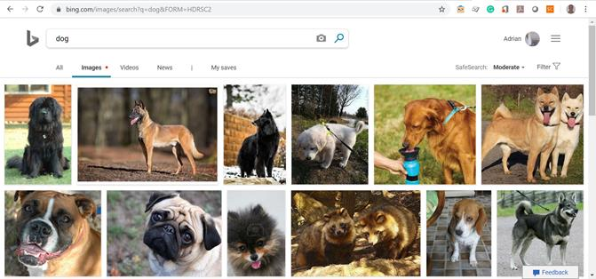
- Yahoo! Image Search (http://images.search.yahoo.com). Yahoo! Search este un motor de căutare deţinut de Yahoo! Incorporation care pune la dispoziţie şi un serviciu specializat pe căutarea de imagini. Din iunie 2007, Yahoo! Search a introdus un API numit “Build Your Own Search Service” (Construieşte-ţi propriul motor de căutare) sau BOSS, ce oferă dezvoltatorilor posibilitatea de a-şi crea propriile lor motoare de căutare bazate pe platforma de indexare Yahoo. Din nefericire, toate serviciile oferite de aceştia sunt contra cost. Mai jos în Figura 6 putem vedea rezultatele căutării expresiei “tennis player” din Yahoo! Image Search.
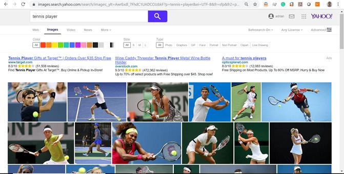
- Flickr (http://flickr.com) este un site web ce găzduieşte imagini şi fişiere video, creat de Ludicorp în 2004 şi cumpărat de Yahoo! un an mai târziu. Câteva statistici din iulie 2019 arată că Flickr are un total de peste 90 de milioane de membri înregistraţi, din care peste 75 de milioane ca fotografi, având un maxim de 25 de milioane de imagini încărcate într-o zi, cu un total de peste 10 miliarde de imagini partajate de utilizatori. API-ul oferit de aceştia permite accesarea fişierelor multimedia fără necesitatea creării vreunui cont, acesta fiind necesar doar în cazul încărcării de imagini pe platforma acestora. API-ul Flickr permite dezvoltatorilor să obţină informaţiile EXIF ale unei fotografii. O căutare poate fi realizată pe baza unor cuvinte cheie, dar poate fi lentă, în cazul în care sunt solicitate şi metadatele EFIX. Pentru o interogare de zece fotografii este nevoie de până la 5 secunde pentru ca informaţiile să fie afişate, potrivit informaţiilor postate de Wikipedia. În Figura 7 putem vedea rezultatele căutării cuvântului “president” pe platforma Flickr.
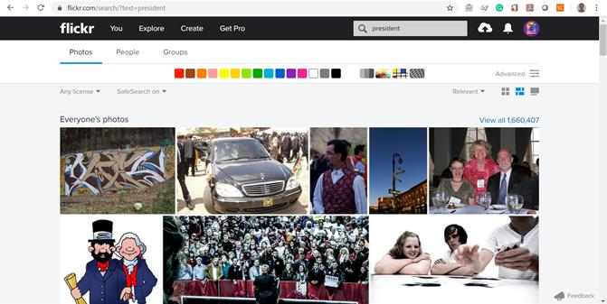
- Picasa (http://picasa.google.com/) este o platformă pentru găzduirea, organizarea şi editarea de fotografii digitale, ce a fost deţinută iniţial de Lifescape şi mai apoi cumpărată de Google în anul 2004. În scopul unei bune organizări, Picasa oferă posibilitatea importării de fişiere, adăugării de etichete, crearea de colecţii, precum şi caracteristici de urmărire şi de recunoaştere facială. Căutarea se poate realiza după numele imaginii, după etichetele asociate, după numele folderului de care aparţin, precum şi după alte metadate. API-ul pe care îl pun la dispoziţie permite integrarea cu albumele Picasa, oferind utilizatorilor posibilitatea să creeze, să modifice sau să şteargă albume, să încarce imagini şi să publice comentarii la acestea, dar şi să facă căutări şi să acceseze metadatele asociate rezultatelor obţinute. Folosirea acestuia este posibilă în urma creării unui cont Picasa, iar autentificarea poate fi realizată prin protocoalele Oauth, AuthSub sau ClientLogin. API-ul poate fi accesat atât utilizând un serviciu REST, cât şi utilizând biblioteca client Java. Răspunsurilor returnate au implicit formatul ATOM, dar pot fi structurate şi utilizând standardul JSON. Mai jos în Figura 8 putem vedea cum sunt organizate imaginile personale folosind un cont gmail.
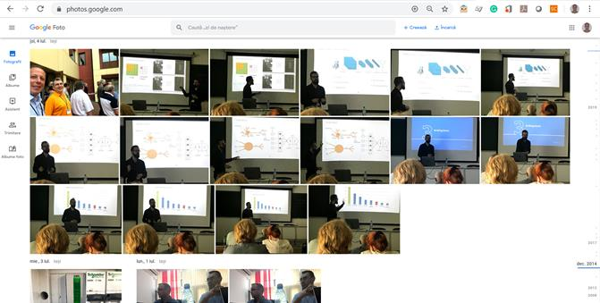
- Photobucket (http://beta.photobucket.com/) este o alternativă gratuită pentru găzduirea de imagini, fişiere video, crearea de prezentări şi partajarea de fotografii. Acesta este utilizat mai ales pentru crearea de albume personale ce pot fi accesate de la distanţă sau pot fi afişate pe site-uri precum: eBay, MySpace, Facebook, LiveJournal, Open Diary. Photobucket oferă, de asemenea, un API pentru dezvoltatori pentru încărcarea de imagini şi clipuri video, obţinerea tuturor fişierelor multimedia recente ale unui anumit utilizator sau a unui grup de utilizatori, căutarea de materiale pe baza unor criterii specificate, precum şi preluarea tuturor metadatelor asociate unei imagini (url, thumbnail, titlu, descriere etc.). Comunicarea se realizează printr-un serviciu REST, pe baza unei chei unice, obţinute în urma înregistrării, iar autentificarea prin protocolul standard Oauth. În Figura 9 de mai jos putem vedea cum se încarcă imaginile pe platforma Photobucket.
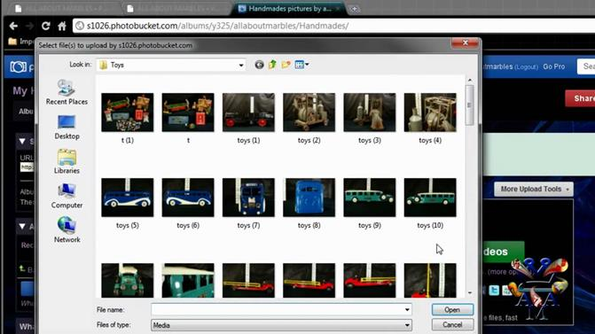
- Panoramio (http://www.panoramio.com/) a fost un site web care făcea posibilă pentru fotografi să-şi organizeze imaginile în funcţie de locaţia unde a fost făcută şi să le poată viziona atât pe Google Earth, cât şi pe Google Maps. Spre deosebire de celelalte motoare de căutare, Panoramio se concentra mai mult pe explorarea şi ilustrarea locurilor din întreaga lumii (oraşe sau natură), căutarea realizându-se pe baza coordonatelor date de latitudine şi longitudine. Cu ajutorul API-ului oferit de aceştia, dezvoltatorii puteau avea acces atât la imagini, cât şi la metadatele asociate, comunicarea realizându-se printr-un serviciu REST, răspunsul fiind returnat în formatul standard JSON. Din 2007, site-ul a fost achiziționat de cei de la Google. În Figura 10 se poate vedea cum imaginile puteau fi vizualizate și la nivelul Google Maps, folosind locația unde au fost realizate.
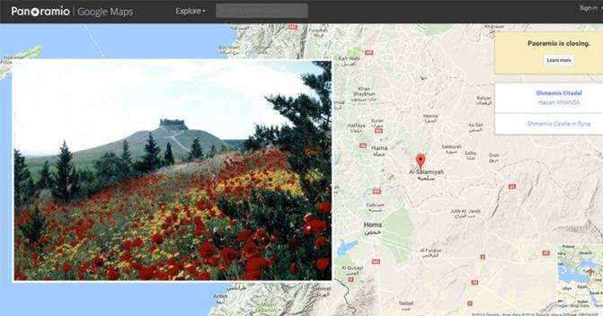
- ImageNet (http://www.image-net.org) este o bază de date cu imagini organizată în acord cu ierarhia WordNet (în prezent se folosesc doar substantive), în care fiecare nod din ierarhie este format din sute şi mii de imagini (în medie 500 de imagini pe fiecare nod). ImageNet oferă acces la clasa de cuvinte şi la hiponimul unui synset, la url-ul imaginilor, la imaginile propriu-zise (pentru proiectele educaţionale sau de cercetare), la caracteristicile SIFT şi la adnotările asociate cutiilor de încadrează obiecte, cutii de sunt adnotate şi verificate cu Amazon Mechanical Turk. În Figura 11 sunt rezultatele care se obțin în urma căutării cuvântului “pool”, vizualizarea făcându-se pe baza arborelui de synset-uri.
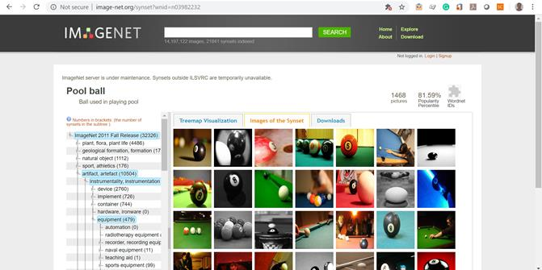
- Picsearch (http://www.picsearch.com) este o companie suedeză care dezvoltă şi furnizează servicii de căutare de imagini pentru site-uri web de dimensiuni mari. Printre clienţii lui Picsearch se numără mai multe companii mari (e.g. Lycos), portale regionale din Germania, Turcia sau ţările arabe, precum şi site-uri de divertisment, sport sau comerţ electronic. Serviciile oferite de aceştia includ recunoaştere facială, filtrare de culori, de mărime, de conţinut, de animaţii etc. Un aspect interesant de la Picsearch este faptul că indexează imaginile de pe web folosind un crawler, cunoscut sub numele de Psbot. Acesta foloseşte o tehnică de încărcare ramificată ce reduce din tensiune ce ar putea apărea la nivelul serverelor indexate. Figura 12 de mai jos redă rezultatele obținute pentru interogarea “tennis player”.
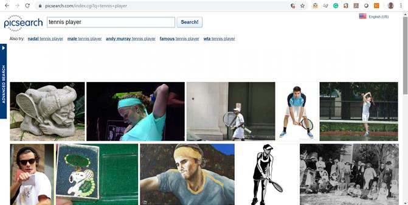
- Cydral (http://addons.mozilla.org/en-us/firefox/addon/cydral-image-search-engine) este un addon pentru Mozilla ce oferă caracteristici de filtrare pentru găsirea de imagini, ilustraţii şi iconiţe din toată reţeaua Internet. Acesta are capacitatea de a găsi locul unde o anumită imagine apare în spaţiul web, dar poate returna şi imagini relevante pe baza unor cuvinte cheie sau prin selectarea unei imagini. Exemplu de folosire a addon-ului poate fi vizualizat în Figura 13 de mai jos.
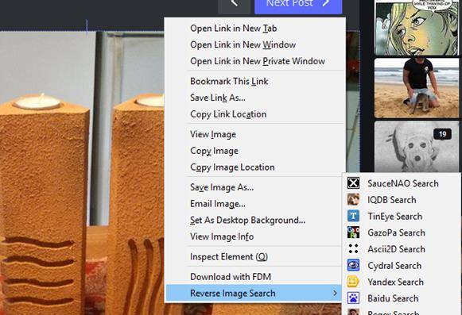
- Incogna (http://incogna.com) este un motor de căutare pentru imagini care îşi organizează fişierele în funcţie de conţinutul acestora. Prin utilizarea de procesări paralele, se caută toate formele existente într-o imagine şi se crează cu ajutorul lor un index vizual de căutare pe scară largă. Spre deosebire de celelalte motoare de căutare prezentate mai sus (excluzând Google Images), tehnologia acestora nu necesită ca imaginea să prezinte metadate asociate, deşi poate fi folosită cu succes şi pentru indexarea de text. Figura 14 prezintă pagina de start a acestui site.
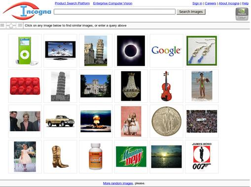
- Getty Images (http://www.gettyimages.com/) este o agenţie americană ce găzduieşte şi furnizează imagini, vizând trei ramuri: publicitate şi design grafic, mass-media (presa scrisă şi publicitate online), precum şi cea de marketing şi de comunicare. Aceştia oferă un API pentru accesul la imaginile din baza lor de date numai celor ce deţin un cont de companie. Acest cont poate fi obţinut în urma unei cereri în care este prezentat motivul pentru care se doreşte accesul la aceste resurse şi este posibil perceperea unor taxe pentru salvarea imaginilor. Figura 15 de mai jos conține rezultatele căutării cuvântului “president”.
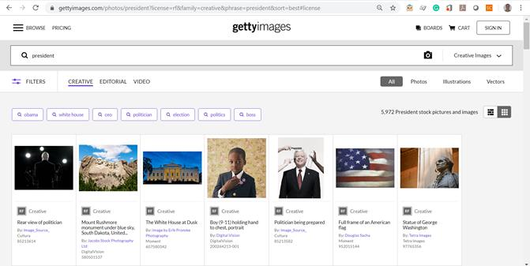
- Quality Image Search (http://qualityimagesearch.com) a fost un motor de căutare de sine stătător care index doar imagini de dimensiuni mari. Atunci când era posibil, metadatele asociate pozei erau extrase şi mai apoi puteau fi vizualizate de către utilizatori.
Concluzii
Imaginile sunt din ce în ce mai prezente în cadrul activităților noastre zilnice, în primul rând când interacționăm cu familia și prietenii în cadrul rețelelor sociale. Volumul din ce în ce mai mare a acestor date, atât din punct de vedere al numărului lor, dar și din punct de vedere al dimensiunilor, face necesară folosirea unor platforme specializate în gestionarea și procesarea acestora. În acest articol am văzut mai multe platforme care ne pot ajuta pentru a gestiona și procesa imaginile, rămânând la latitudinea noastră pe care să o folosim în funcție de aplicația pe care dorim să o dezvoltăm.
În cadrul rețelelor sociale interesul pentru promovarea unei persoane sau a unei companii prin imagini e din ce în ce mai mare (Acuña, 2010), (Kuvykaite și Piligrimiene, 2013), iar analizele care se fac pentru a identifica ce imagini se potrivesc cel mai bine pentru aceasta sunt din ce în ce mai avansate și mai relevante (Dib și Alhaddad, 2015), (Xi et al., 2019).
Referințe bibliografice
- Acuña, B. P. (2010) The Power of Social Media Image. In Journal of Alternative Perspectives in the Social Sciences, vol. 2, no. 1, pp. 298-308.
- Blazeski, G. (2018) Taken in 1826, “View from the Window at Le Gras” is the world’s first photograph. The Vintage News http://www.thevintagenews.com/2018/03/23/coffee-yemen/
- Dib, H., Alhaddad, A. A. (2015) Determinants of Brand Image in Social Media. In International Journal of e-Education, e-Business, e-Management and e-Learning. vol. 5, no. 4, pp. 180-190.
- Madurai, V. (2018) Web Evolution from 1.0 to 3.0. A Medium Corporation [US] http://medium.com/@vivekmadurai/web-evolution-from-1-0-to-3-0-e84f2c06739
- Kuvykaite, R., Piligrimiene, Z. (2013) Communication in social media for company’s image formation. In Economics and Management. vol. 18, no. 2, pp. 305-317.
- Xi, N., Ma, D., Liou, M., Steinert-Threlkeld, Z. C., Anastasopoulos, J., Joo, J. (2019) Understanding the Political Ideology of Legislators from Social Media Images. In the Proceedings of International AAAI Conference on Web and Social Media (ICWSM 2020), 12 pages.